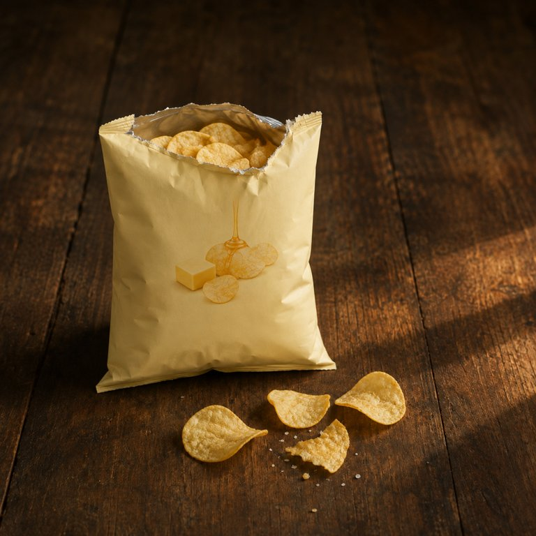

蜂蜜黄油味 · 第 1 片

盒盖内侧的便签：甜的薯片，第一片怀疑人生，第三片人生就通了。
顶封口从一侧起手撕，缝不太顺直。封口一松，气轻轻喷出来，先到鼻子的不是油味，是蜂蜜和黄油的香，满袋口都是，甜的，浓得像人工的，但很好闻。袋口的银色内壁沾着一层浅黄的粉。
- 包装
- 手伸进袋口，捏出一片，指尖沾了黄粉。
- 看
- 普通的圆弧形淡金色薄片，比原味更薄，得拿在手里比。片面被浅色的调味粉盖住，不透光了，油亮只在凹面露一点。粉末沿着指纹的沟聚。翻的时候粉掉到袋底，聚成一层黄的。
- 闻
- 片子送到鼻子前，蜂蜜黄油气比袋口更集中，土豆味几乎闻不到了。
- 入口头两秒
- 第一片粉最足，蜂蜜的甜、黄油、盐三样一起冲上来，甜在最前，断下来的碎角掉在掌心。
- 化的方式
- 嚼下去薯片散成细渣，土豆味在第一口不明显，越嚼越能尝到土豆本味，蜂蜜和黄油在嘴里合成一个味，像黄油落在蒸土豆上再淋了蜜。浓，嘴里却不糊。最后几下舌面和唇瓣留一层粉质的甜咸。指腹干、亮、滑，指纹沟里卡着浅色的粉，带甜。
- 余味（大约 9 分钟散完）
- 0 分钟上颚一层油和粉，甜的，嘴唇咸的，鼻子里还是蜂蜜黄油。3 分钟甜退得干净，剩一点土豆的清香和奶香，舌头有点腻。8 分钟手指上的黄粉舔不干净，是甜的，嘴里还有一丝奶味。